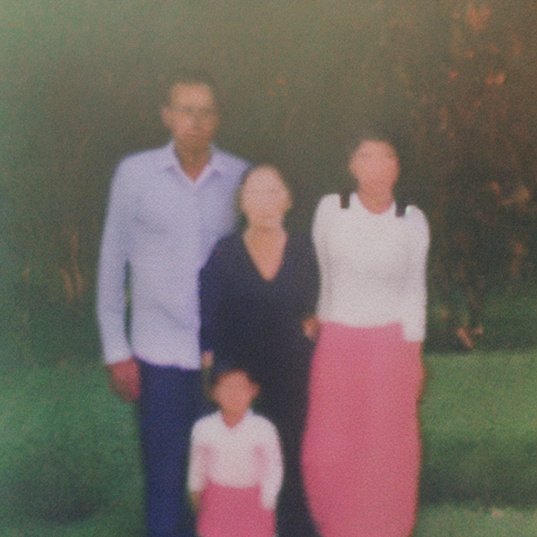
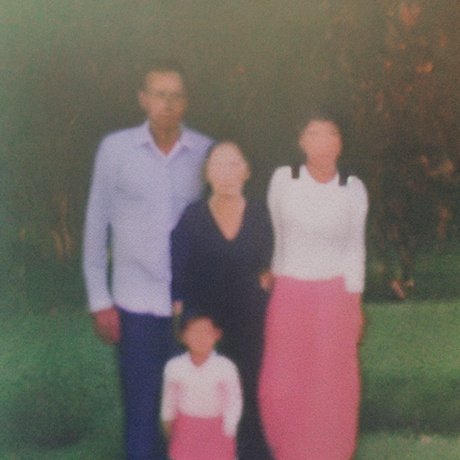
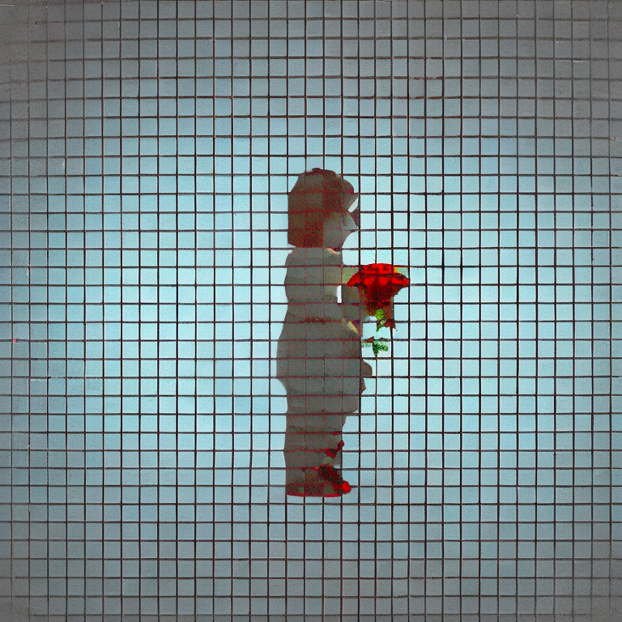
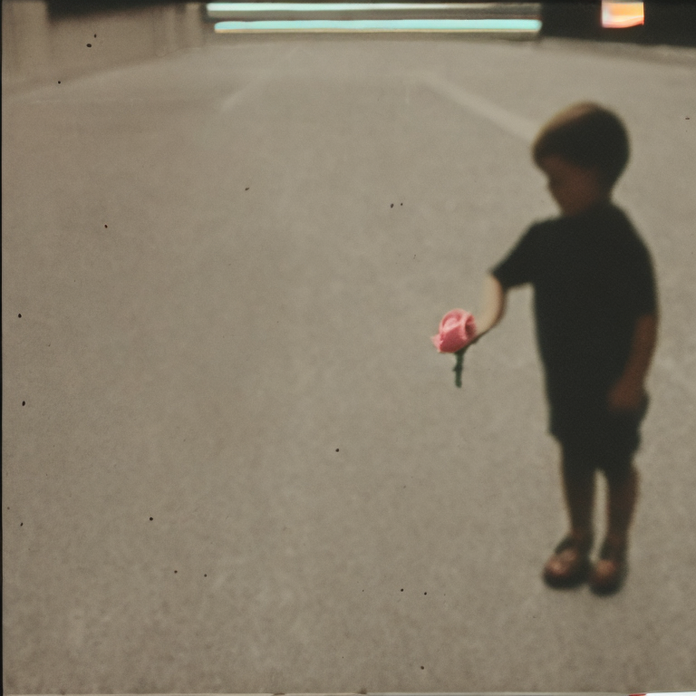
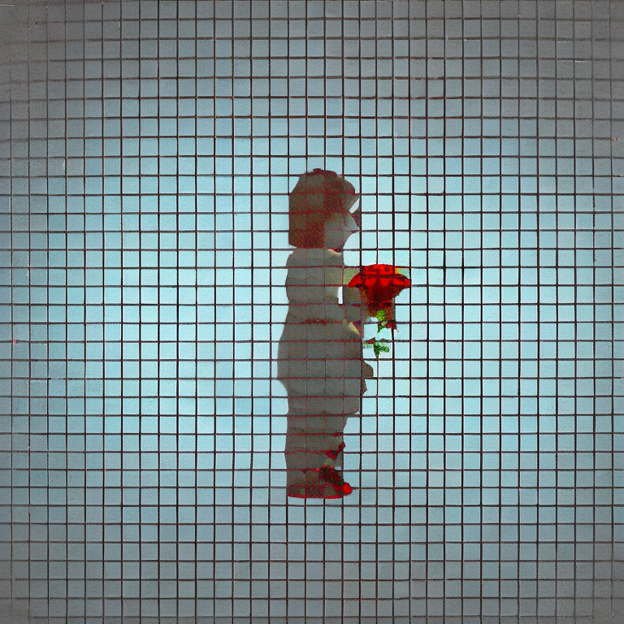
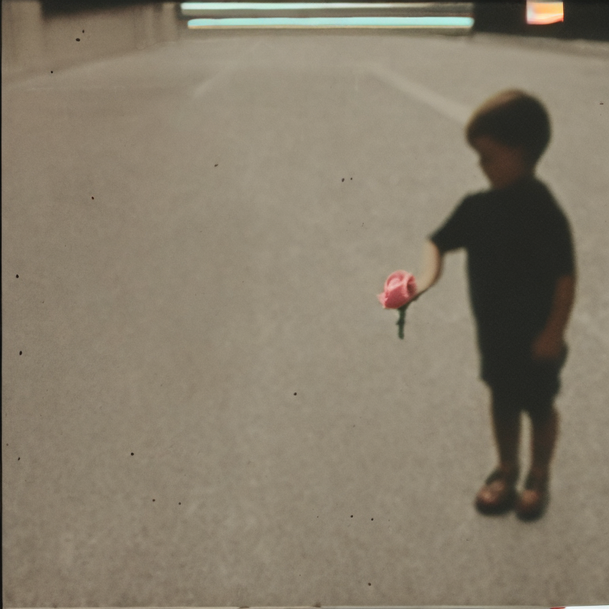
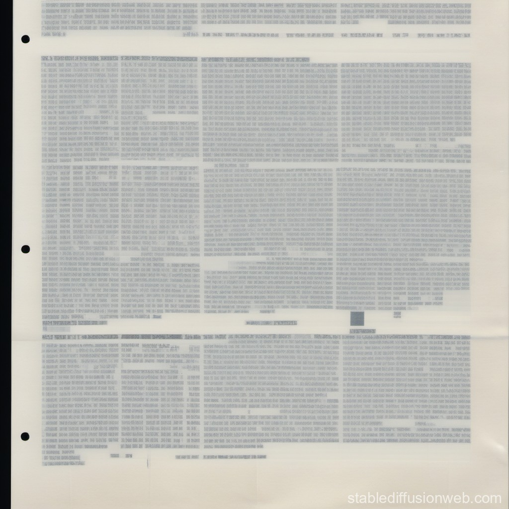
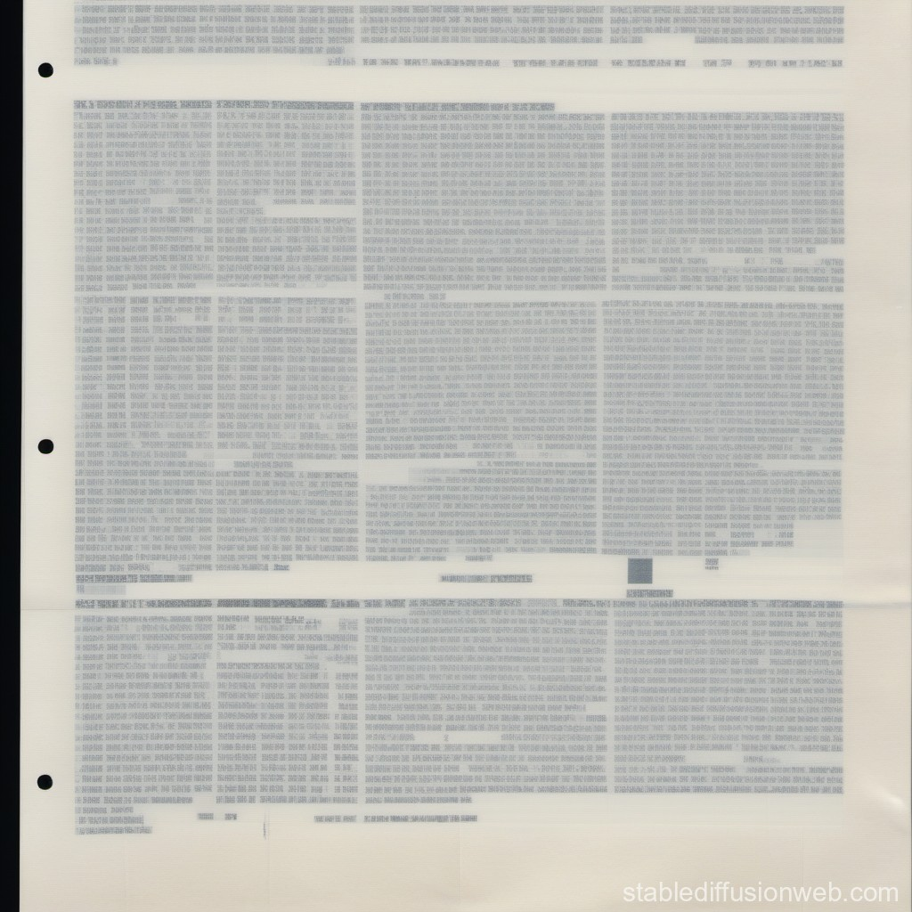

- 1. contexto-histórico
- 2. inspiración
- a
- a
- a
- a
contexto histórico:
En 1935, el filósofo alemán Walter Benjamin publicó su ensayo "The Work of Art in the Age of Reproduction", reflexionando sobre el impacto de la reproducción mecánica de imágenes en el aura del arte y cuestionando las nociones de originalidad y autenticidad. Como una respuesta hacia la era digital, Hito Steyerl profundizó en este discurso en 2009, examinando la digitalización y el movimiento de imágenes dentro del espacio digital. Destacó el potencial transformador de las "imágenes pobres", imagenes de baja resolución liberadas de archivos tradicionales.
Situado dentro de este marco de referencia teorica, esta investigación intentará aplicar y elaborar la teoría de la imagen dentro de su nuevo contexto frente a la inteligencia artifical. Con la investigación quiero responder al desacoplamiento de la imagen fotográfica del medio de la fotografía, enfatizando su nacimiento a partir de algoritmos en lugar de medios tradicionales. En particular, tratará el tema de la "imagen pobre" en la era de la generación de imágenes por inteligencia artificial.
Vemos la imagen pobre no sólo como una imagen de baja resolución, sino como una imagen con cierta jerarquía dentro de la sociedad construida de imágenes. Como describe Steyerl, representa la “basura que llega a las costas de las economías digitales”, circulando perpetuamente en círculos ‘underground’, donde los espectadores asumen simultáneamente el papel de consumidor (el que ve la imagen) y el productor (el que descarga, recorta, cambia y distribuye la imagen).
La incorporación a esta dinámica de la reciente democratización y auge de la inteligencia artificial introduce el potencial de un cambio profundo en esta cultura de la imagen. A partir de bases de datos sobre bases de datos de imágenes pobres (un formato visual que, según Wasielewski, permite una clasificación optimizada para el machine learning, eliminando el exceso de detalles que daría lugar a un ‘overfitting’) para sintetizar representaciones fotorrealistas de alta resolución, remodelando nuestra comprensión de la creación y el consumo de medios visuales.
Dentro del campo de la imagen pobre se despliegan una multitud de temas y direcciónes que explorar. En esta investigación, mi enfoque primordial se centrará en la influencia de la inteligencia artificial en este contexto, considerándolo como el cambio más significativo recientemente en la creación de contenido. Sin embargo, también abordaré temas sociales y políticos, como la imagen pobre en el contexto de los memes y en relación con la vigilancia (con ayuda de fuentes como Harun Farocki), con el objetivo de ofrecer un análisis relativamente completo del tema.
inspiración:
src: hang gao

src: thomas ruff's jpeg series
src: slanted #37
src: harun farocki's eye/machine
src: harun farocki's operational images

src: unlicensed, bootlegging as a creative practice

src: unlicensed, bootlegging as a creative practice
link a página de are.na con más fuentes de inspiración
↑ back up
primaria:
en cuanto a investigación primaria, mi fuente principal ha sido (hasta ahora) investigar diferentes modelos de IA de generación de imagenes con el fin de observar su creación de imagenes pobres. consulté los siguientes modelos: stable diffusion, bing ai & leonardo ai. intenté con tres mensajes diferentes, elegidos para recibir una variación de imagenes y descriptores, y compararlas:


 



 





 

otra rama de la investigación primaria que hice a base de una de las clases fue una encuesta mostrando varias imagenes de paisajes, algunas generadas por IA, otras de baja calidad, y otras normales. a base de estas imagenes preguntaba al publico cual les parecia más real, y que sensacion les daba cada imagen. terminé no publicando esta encuesta ya que en el momento no pensaba que me podría ayudar tanto en la investigación.


secundaria:
1. in the defense of the poor image (hito steyerl, articulo, 2009)

2. operational images: from the visual to the invisual (jussi parikka, libro, 2023)

3. authenticity and the poor image in the age of deep learning (amanda wasielenski, paper, 2023)

mind-mapping:

cuaderno-borrador:


↑ back up
- 1. pregunta
- 2. hipótesis
- a
- a
- a
- a
pregunta:
1 cual es el significado de la imagen de baja calidad en una sociedad dependiente de las imagenes, 2 y como se relaciona esto con la democratización de la imagen de alta calidad mediante la inteligencia artificial?
hipótesis:
En una sociedad dependiente de las imágenes, las imágenes de baja calidad adquieren un significado subversivo que desafia las narrativas dominantes. A la medida que la inteligencia artificial democratiza la imagen de alta calidad, surge una dinámica compleja; por un lado, se aumenta la brecha entre imágenes de alta y baja calidad, aunque por otro lado se reduce ya que las imagenes generadas por la IA nacen de las cenizas de las imagenes pobres. Veo que la imagen de baja calidad podría subvertir el poder de la IA sobre la realidad de las imagenes, ya que carece de la capacidad de generar este tipo de calidad visual. Por otro lado esto depende también del consumidor, ya que una imagen pobre no solo nace desde una estética, sino desde un recorrido.
↑ back up